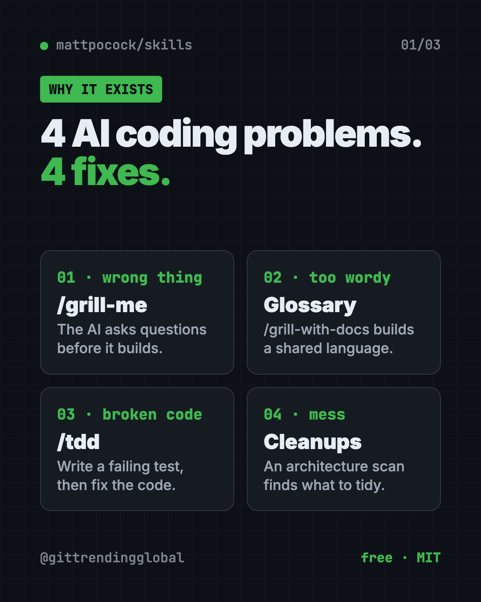
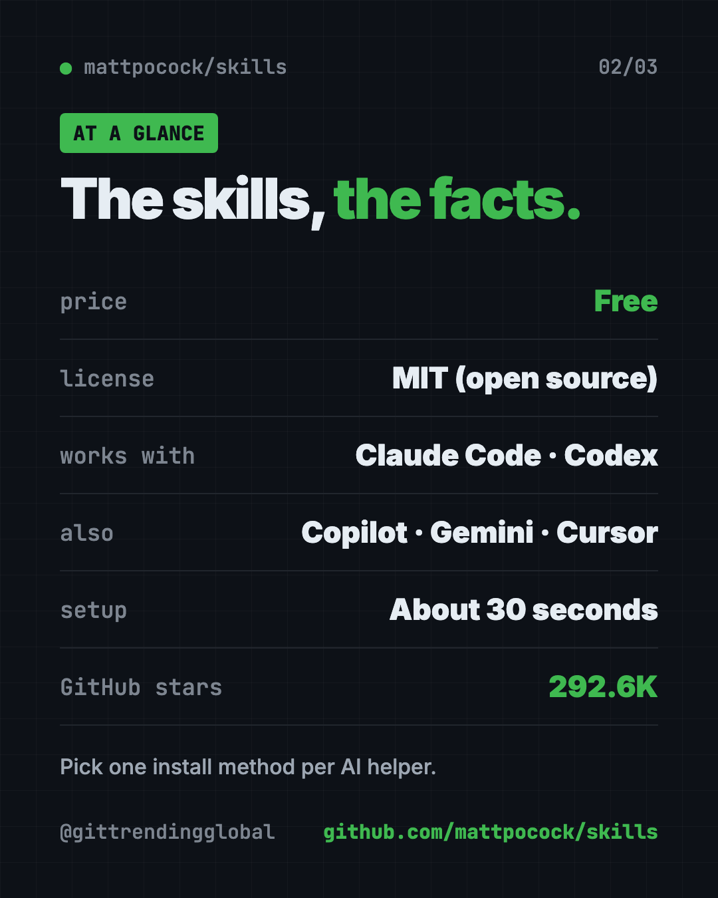
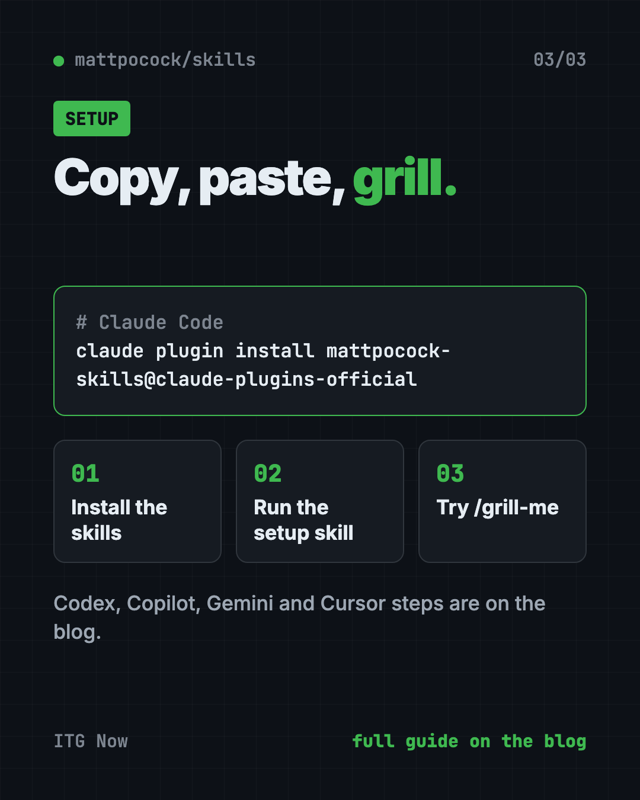

Matt Pocock Skills: Free Claude Code Skills That Work
Matt Pocock skills are free add-ons that make Claude Code, Codex and Copilot ask better questions, test their work and keep your code tidy.
Matt Pocock skills are a free set of add-ons that make AI coding helpers like Claude Code and Codex ask questions before they build. They also help the AI test its own work and keep your project tidy.
If your AI keeps building the wrong thing, this guide shows you what each skill does, how to install it in 30 seconds, and which one to try first.
Key takeaways
- Free and open source. MIT license. Copy it, change it, use it at work.
- Fixes four common AI coding problems: building the wrong thing, wordy answers, broken code and messy projects.
- Start with
/grill-me. The AI interviews you about your plan before it writes a single line. - Works with many tools. Claude Code, Codex, GitHub Copilot, Gemini CLI, Cursor, OpenCode and more.
- Very popular. About 292.6K stars on GitHub, one of the most starred skill packs around.
What are Matt Pocock skills?
Matt Pocock is a well-known TypeScript teacher. This repo holds the skills he says he uses every day for "real engineering," not quick "vibe coding."
A skill is a saved set of instructions your AI follows for one job. Think of a recipe card you hand to a new cook. You don't explain the dish every time. You just say "use this card."
Matt describes his skills as small, easy to adapt and able to work with any model. He wants you to tweak them and make them your own.

Which problems do these skills fix?
The README lists four ways AI coding goes wrong. Each one has a matching fix.
- The AI didn't do what you wanted. The fix is a "grilling session." The AI asks you detailed questions until you both agree on the plan. Use
/grill-mefor any idea, or/grill-with-docsfor code. - The AI is way too wordy. The fix is a shared glossary of your project's terms. Matt's example: a long sentence about lessons and the file system becomes just "the materialization cascade." Fewer words, same meaning.
- The code doesn't work. The fix is fast feedback.
/tddmakes the AI write a failing test first, then fix the code until it passes./diagnosing-bugsruns a careful step-by-step bug hunt. - The project turns into a mess. The fix is caring about design.
/improve-codebase-architecturescans your code and suggests places to clean up.
How to use Matt Pocock skills (real examples)
You don't have to be a full-time coder to get value here. A few everyday scenarios:
- Plan a side project. You want a simple booking page for your yoga class. Type
/grill-meand describe it. The AI asks about payments, time zones and cancellations before anything gets built. - Think through a business idea.
/grill-meworks for plans that aren't code at all. Use it to poke holes in a launch plan or a pricing idea. - Stop confusing replies. When the AI says something that makes no sense, type
/wait-what. It explains again in plain English, with the background you were missing. - Fix a bug that keeps coming back. Run
/diagnosing-bugs. It builds a check that fails on the bug, narrows it down, fixes it, then adds a test so it stays fixed. - Switch to a fresh chat without losing work.
/handoffsums up the current chat so a new AI session can pick up where you left off.
Not sure which one fits? /ask-matt points you to the right skill for your situation.
💡 Tip: Use
/grill-mebefore every new feature, even small ones. Matt calls the grilling skills his most popular, and says to use them every time you want to make a change.
What's inside the skills pack?
The skills come in two groups. Engineering skills are for code work. Productivity skills work for anything.
Some you call yourself by typing a slash command. Others the AI can pick up on its own when the task fits.
Highlights from the README:
/to-specturns your chat into a written plan./to-ticketsbreaks a plan into small tasks./implementbuilds the work from a plan, testing as it goes./code-reviewchecks changes against your coding rules and the original plan./prototypebuilds a throwaway draft to answer a design question./researchlooks up a question in trusted sources and saves notes with citations./teachteaches you a new skill or idea over several sessions./retrosuggests ways to improve your AI setup after a work session.
Are Matt Pocock skills free?
Yes. The skills are free under the MIT license. That means you can use, copy and change them, even for work.
Your AI helper may still cost money. Claude Code and Codex need their own accounts. The skills themselves cost nothing.
There's also an optional free newsletter. The README says about 60,000 developers get it.
Matt Pocock skills at a glance
| Price | Free |
| Works offline | No, it runs inside your AI helper, which needs internet |
| Platforms | Claude Code, Codex, GitHub Copilot, Gemini CLI, Cursor, OpenCode and more |
| License | MIT (open source) |
| GitHub stars | About 292.6K |
| Setup time | About 30 seconds, says the README |
| Best for | Anyone who builds with AI and wants it to listen better |

How to install Matt Pocock skills
These steps come straight from the README. Pick one method per AI helper. The README warns that installing both ways gives you every skill twice.
Step 1: Get the skills
For Claude Code, copy and paste this into your Terminal:
claude plugin install mattpocock-skills@claude-plugins-official
It updates itself by default.
For Codex, copy and paste this:
codex plugin marketplace add mattpocock/skills
codex plugin add mattpocock-skills@mattpocock
For GitHub Copilot, copy and paste this:
copilot plugin marketplace add mattpocock/skills
copilot plugin install mattpocock-skills@mattpocock
For Gemini CLI, copy and paste this:
gemini skills install https://github.com/mattpocock/skills.git --path skills/engineering
gemini skills install https://github.com/mattpocock/skills.git --path skills/productivity
For Cursor, OpenCode, Windsurf and other tools, copy and paste this:
npx skills@latest add mattpocock/skills
When it asks which skills to take, include setup-matt-pocock-skills.
⚠️ Heads up: The Gemini and
npx skillsversions don't update on their own. Re-run the command (ornpx skills@latest update) to get new changes.
Step 2: Run the setup skill
Open your project in your AI helper. Then type this once per project:
/setup-matt-pocock-skills
It asks three things. Which issue tracker you use (GitHub, GitLab, plain local files or something else). What labels you put on tasks. And where to save any documents it writes.
Step 3: Start with a grilling
That's it. Try /grill-me on your next idea and see how many questions you hadn't thought of.
Let Claude or Codex set it up for you
Claude Code and OpenAI Codex are AI helpers that run in your Terminal and can do setup steps for you. You paste a request, and you approve each step.
Copy and paste this:
Please install Matt Pocock's skills from github.com/mattpocock/skills.
1. Read the README's install section first.
2. Use the install method for the tool you are running in. Only use one method.
3. Tell me what each command does before you run it.
4. Then run /setup-matt-pocock-skills and walk me through its questions.
5. Finish by showing me the 3 skills a beginner should try first.
Then try asking:
/grill-me I want to build a simple booking page for my small business.
Which of Matt Pocock's skills should I use to fix a bug that keeps coming back?
/handoff so I can continue this work in a new chat tomorrow.

💡 Tip: Answer the grilling questions honestly, even with "I don't know yet." That is the point. The gaps show up before the AI builds the wrong thing.
Our take
These skills turn good engineering habits into short commands. The grilling idea alone is worth the 30-second install. It forces the planning talk most people skip.
What we like:
- Free, open and easy to change.
- Small, separate skills. Use one or use them all.
/grill-meand/wait-whathelp even if you never write code.- Clear install steps for many AI tools.
- Honest about limits. Matt says the architecture skill is "a survey, not a rescue."
What to watch for:
- Some names assume coding know-how, like
/tddor "issue tracker." - You need an AI coding helper first, and those can cost money.
- Grilling sessions take time. For a tiny change, it can feel like a lot of questions.
- The manual install methods need you to update by hand.
Want more rules for your AI coder? Read our guide to Karpathy Skills, one file that makes AI think first, or try Superpowers, another popular skills pack. gstack is a bigger kit if you want a full team of AI roles. This repo also shows up in our Top 5 GitHub repos for October 2026.
FAQ
What is the grill-me skill?
/grill-me makes your AI interview you about a plan until every open question is answered. It works for any idea, not just code.
Do Matt Pocock skills work with Codex and Cursor?
Yes. The README has install steps for Claude Code, Codex, GitHub Copilot and Gemini CLI. Cursor, OpenCode and others use the npx skills command.
Are Matt Pocock skills free?
Yes. They are free and open source under the MIT license. Your AI helper may have its own cost.
Can I install the skills twice by mistake?
Yes, and you shouldn't. The README says to pick one method per AI helper, because using both gives you every skill twice.
Do I need to know how to code?
Not for every skill. /grill-me, /wait-what, /teach and /handoff work for plans and learning. The engineering skills make more sense if you build software.
Get Matt Pocock skills: github.com/mattpocock/skills
Follow @gittrendingglobal on Instagram for one free, useful tool every day.
📲 Watch it on Instagram in under a minute
Keep reading

DBX: Free Database Client for 100+ Databases, With AI (2026)
DBX is a free database client that opens 100+ kinds of databases in a 25 MB app. Its AI helper turns plain English into database queries for you.

PureMac: Free CleanMyMac Alternative, No Subscription
PureMac is a free CleanMyMac alternative. It clears junk, fully uninstalls apps and finds duplicates, with no subscription, no tracking and no scare tactics.

Strata: Run Big Local AI on a Gaming PC, Free
Strata is a free installer that runs big, private local AI on a gaming PC. It sets up a large Qwen model, so your chats never leave your computer.